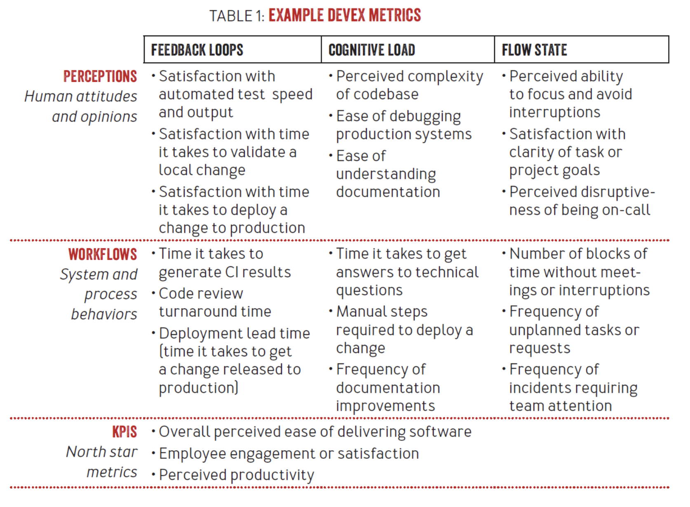

Journal#
Oct 26, 2023 - How to setup a receiving email server on a Linux machine
Oct 23, 2023 - Notes for Four Key Metrics for a Software Development Team
Oct 17, 2023 - “Mice equal, like a general sequel.” - Youtube autogenerated subtitles.
Oct 16, 2023 - Added article on Mutable types in Pydantic default values
Oct 12, 2023 - Notes for Being Accountable When You Don’t Have Control
Oct 04, 2023 - Turns out you can’t use regular RJ45 connectors with flat ethernet cables because the wire diameter is much smaller.
And it’s really hard to find the connectors for flat cables due to low supply.
It’s like half the size of the regular round cable wire.
I had to learn it the hard way.
Lesson learned: when buying ethernet cable pay attention to the wire gauge.
AWG 24 is okay, but AWG 32 is too small.
Oct 01, 2023 - Observation: if you organize kid’s birthday party in Minecraft theme, you’re about to get a whole lot of Minecraft-themed legos.
Sep 27, 2023 - Session Authentication and Single-Page Applications
Sep 24, 2023 - Notes for A Senior Engineer’s Guide to the System Design Interview (Part 4)
Sep 23, 2023 - Notes for A Senior Engineer’s Guide to the System Design Interview part 2 and part 3
Sep 20, 2023 - Notes for A Senior Engineer’s Guide to the System Design Interview (Part 1)
Sep 18, 2023 - Added article Using GPIO on an industrial mini PC
Sep 07, 2023 - Libraries to review: Fastapi, pydantic
Aug 30, 2023 - Notes for Why we always end up with waterfall, Robots vs. Programmers
Aug 29, 2023 - Notes for Gitlab values on iteration, Gitlab’s Directly Responsible Individuals
Aug 29, 2023 - Questions for a hiring managert
Aug 19, 2023 - Notes for Why you should check your secrets into Git, How to get started with async
Aug 18, 2023 - Notes for What is a directly responsible individual?
Aug 17, 2023 - Notes for Cognitive load is what matters
Aug 16, 2023 - Notes for GitHub Accelerator
Aug 15, 2023 - Notes for Objective-Driven AI
Aug 14, 2023 - Notes for How a startup loses its spark, How Netflix Reinvented HR
Aug 13, 2023 - Notes for Team Topologies
Aug 11, 2023 - Notes for How to use spikes as a foundation for ADRs
Aug 10, 2023 - Notes for Scaling the Practice of Architecture, Conversationally
Aug 10, 2023 - relative, related, relevant.
Aug 9, 2023 - Notes for Decentralizing the Practice of Architecture at Xapo Bank
Jul 19, 2023 - the more I work on the project docs, the more I wonder:
Why none of my previous jobs had this level of documentation?
Does the work I’m doing add value to the project, or am I caught in a perfectionist loop, polishing somethings that shouldn’t even exist?
More reading material: https://abseil.io/resources/swe-book/html/ch10.html
Jul 13, 2023 - finally, an opinion on downsides of multi repo:
They pay for it by having to invest a lot into release management, version synchronization across multiple teams, much more integration testing, worse understanding of the product by individual developers / teams, and, in general, lower quality of the product. But, off-the-shelf VCSs don’t allow for sharing large repositories easily, and, of course, the problem this merge queue is trying to address would grow more severe with the size.
Jul 9, 2023 - I converted my Sphinx source files to conform to Johnny Decimal, and implemented the idea to remove friction for adding new articles.
I published this as gdocsync. The project is a bit raw, but I’m already dog-fooding it here.
Jun 28, 2023 - Nice collection of articles from AWS: The Amazon Builders’ Library
Jun 26, 2023 - “capturing the fast-growing demand” is all it is about these days.
Jun 22, 2023 - interesting quote from “A Philosophy of Software Design” book by John Ousterhout:
Although I am a strong advocate of unit testing, I am not a fan of test-driven development. The problem with test-driven development is that it focuses attention on getting specific features working, rather than finding the best design. This is tactical programming pure and simple, with all of its disadvantages. Test-driven development is too incremental: at any point in time, it’s tempting to just hack in the next feature to make the next test pass. There’s no obvious time to do design, so it’s easy to end up with a mess.
Jun 21, 2023 - I’m gonna call it “Public employee handbook, built as a static website, using Johnny Decimal system.”
Jun 20, 2023 - I’m brewing these 3 ideas together:
Johnny•Decimal system to organise projects.
Async communications in distributed teams, promoted by Zulip.
Jun 20, 2023 - Why remote works
Jun 17, 2023 - whenever you say something stupid Santa Claus kills one gnome. Which is also stupid to say. So it makes it two gnomes each time.
Jun 15, 2023 - Quick non-senstive abbreviation to mark especially sensitive critical code sections: TTCLYMOIWTYMLYTTC - Treat This Code Like Your Mamma Or I Will Treat Your Mamma Like You Treated This Code
May 25, 2023 - Quotes from Ask HN: How do you not take criticism of your work personally?:
A high criticism tolerance is learned by understanding that ones self worth is not attached to output or delivery. (This is hard in our industry) It comes from self-acceptance and compassion. And these values are learned early on. You’ll find that the people that break down at the slightest criticism the most are those that were criticised the most as children as well. Those that had no room for being anything other than perfect. Where value was obtained from performance. To take it even further…why see it as criticism at all? You are not your lines of code.
As much as i like the concept in general in life, in this case its just “you are not your lines of code”. Also people who criticize people make a mistake kind of. Always criticize the code, not the person
(Sometimes anger is healthy, it may also be a signal to us that our boundaries have been violated.) Exactly. And if that boundaries get violated repeatedly in the same situation (especially by the same people), it is fine to release that anger in a controlled way. I’ve come to the conclusion that some folks haven’t left the state where they sometimes need a (vocal) pat on their hand to realize they crossed boundaries they shouldn’t cross. If you can play that game, congrats. Also, do not swallow your anger. Find a non-destructive, non-harmful way to release it. As anger is a physical reaction, the easiest way is to go for a walk, ride your bike or whatever. Whatever floats your boat should be fine.
May 20, 2023 · Such a great article!
DevEx: What Actually Drives Productivity

May 5, 2023 · Looks like I lived under the Python rock for some while. Here’s my reading list for the weekend:
March 1, 2023 · The biggest mistake an engineering manager can make in weekly 1:1 is to talk more than to listen. Engineer without their voice is unhappy engineer and a sure fire attrition.
March 20, 2023 · I have this magical shell script running, that configures split tunnel for a single user.
I wrote it few years ago. But I can’t read it now.
#!/bin/sh
iptables -t mangle -I OUTPUT -m owner --uid-owner deluge -j MARK --set-mark 42
iptables -t mangle -I OUTPUT -d 192.168.0.1/24 -m owner --uid-owner deluge -j RETURN
iptables -t nat -I POSTROUTING -o tun0 -j MASQUERADE
ip rule add fwmark 42 table 42
for f in /proc/sys/net/ipv4/conf/*/rp_filter; do
echo 0 > $f
done;
# ip route add default via $(ifconfig -a tun0 | grep -o 'P-t-P:[^ ]*' | cut -d : -f 2) table 42
ip route add default via $(ifconfig -a tun0 | grep -o 'destination [^ ]*' | awk '{print $2}') table 42
February 1, 2023 · Davit and I have been working on PaydayProtection.com for about a week in total. So far we got a landing page to collect emails of the people who will early access to the service once we launch it.
Building it is fun. I learned 11ty and tailwind, refreshed my CSS. The whole thing is deployed to Netlify and uses Netlify Forms and Functions to save the submitted emails. So far we are well into the free tier.
Many parts of the site are generated by, or with help, of ChatGPT and other AI services. Their output is grammatically correct, but dull and soulless, which doesn’t work well with marketing we’re looking for.
We gonna have a professional designer work on the page, and give us mock ups, that I should be able to quickly enact through the 11ty+tailwind boilerplate I built.
I started reading “Start small, stay small: a developer’s guide to launching a startup” by Rob Walling. The book is exciting and straight to the point. I already can see how much our effort is misplaced.
We need to work on our goals, and really figure out the marketing effort, and how we can validate the idea.
January 7, 2023 · My favourite Chipotle order: salad bowl, no rice, pinto beans, chicken, grilled veggies, tomatoes, sour cream, shredded cheese, guac, and lettuce on top.
It has nice balanced taste, healthy combination of ingredients, and sane number of calories.
Chipotle offers some junk food options, but it’s possible to pick just the good stuff.
These days, it’s my first choice in the shopping mall food courts.
November 17, 2022 · Lessons learned from climbing
You look at your arms but all the lifting is done by your legs. When you begin, it feels that the arms strength is the bottleneck, but the progress comes from learning to keep arms relaxed and controlling your balance to let the legs do the work.
The obvious way to progress seems to be from building up strength. But losing weight can actually boost your performance in shorter time.
Sometimes when you plateau, the best thing is to take a break. Muscles grow when they rest, and when you come back you suddenly have more endurance and can do harder routes.
One of the super powers of experienced climbers is to be very aware of getting tired, so they can find a good spot to rest on the wall.
October 17, 2022 · Hey, network! We’ve opened new positions to scale our product nationwide! We need:
Scum master.
Software development psychol.
Amel ginger with sloth filling experience.
Extra points for having experience with:
Scrumbut implementation.
Technical debt reprioritization.
Ass-covering paper trail.
Reach out to learn more, or if you know someone who fits the role!
Running log#
WEEK MO TU WE TH FR SA SU TOTAL
0704 - 2 6 7 - - - 15
0711 4 - - 4 6 4 6 14
0718 - - 6 - - - - 6
0725 - - - - - - - 0
0801 10 4 6 - - - 10 30
0808 4 - 10 - 8 - - 22
0815 - 4 - 6 6 - - 16
0822 8 - - 6 - - - 14
0829 12 - 6 - - 6 - 24
0905 6 - - - - - - 6?
0912 12 6 - - - - - 18
0919 - - - - - - - 0
0926 - 4 6 6 - - - 16
1003 6 - 4 4
October 6, 2022 · What’s the name for it?
You are going to get a lunch at home;
But you need a clean plate;
All plates are dirty and stacked in a kitchen sink;
You’re out of dish washing liquid, and have to use dishwasher;
Dishwasher is already full with dirty cups;
You’re out of dishwasher tablets, and need to buy them;
Closest store is closed, and you need to drive to the next one;
Car has a flat tire, that has to be fixed first, and you need to get to tire shop;
Car is out of gas, and you need to get the gas by foot.
This example is long and unrealistic, but I see this happening all the time. Solution for a small problem is blocked by something else, that requires significantly bigger effort. Is it akin to technical debt? Just not exactly technical.
October 3, 2022 · Scratched my self-hosting itch with two new additions to my home server:
Nextcloud and Storj.
Nextcloud is a bit weird Snap installation with PHP, MariaDB, and Redis. I don’t feel comfortable exposing self-managing PHP applications (read Wordpress-level security), so I’ve put it behind my 2FA cloud proxy. And of course it doesn’t work well with the Nexcloud mobile client. Aside from security, performance on my old home server is not that great. Image previews are generated on-demand, so it takes awhile to see my 300 GB photo gallery. Apple live photos seem to have no support too. All in all, I don’t think it can replace Google Photos, as I hoped.
Storj is an implementation that I had another day. Pretty good one. Set up could have been better streamlined, so it took few hours to hook up a Raspberry Pi 4 with 2 TB external HDD storage. As a side effect I know have an Etherium wallet, that should be used for pay outs. We’ll see. Overall, I like their implementation a lot. From ideation to performance and security aspects. I wish I could make it bare-metal, but I caved too early and went with the recommended Docker installation.
Climbing log#
August
9: 10a, 10c, 10c, 11a, 11a
11: 10c, 10d, 11a, 10c, 11b, 10b
16: 10b, 10d, 11a, 11a, 11a
18: 10c, 10d, 11a, 11b, 11b
August 26, 2022 · Everything looks big when your room is too small. Visit other houses and get outside to put things back in perspective.
July 11, 2022 · Ran 4K in the morning in 22 minutes. Felt like slow-pace, but the time is the same…
July 9, 2022 · Ran 6K in the evening in 33 minutes. Felt like fast pace.
July 8, 2022 · Ran 2K in the morning. Felt like faster pace, but took actually 12 minutes.
July 7, 2022 · Ran 5K in the morning.
July 6, 2022 · Ran 2K in the morning. Again, pain in the middle of chest. Ran another 4K in the evening, without pain.
July 5, 2022 · Ran 2K in the evening. Pain in the middle of chest stopped from going on the second lap.
July 4, 2022 · Completely recovered from Covid, tested negatively.
June 30, 2022 · Almost recovered, still sleeping more, and some kidney pain.
June 29, 2022 · Feeling better, except for kidney pain.
June 28, 2022 · Slept around 20 hours, kidney pain got worse.
June 27, 2022 · Slept almost whole day, kidney pain got worse.
June 26, 2022 · Slept almost whole day, started to feel pain around kidneys. Tested positive on homekit.
June 25, 2022 · Started to experience cold symptoms: dizziness, body weakness, headache, cough, and running nose.
June 19-24, 2022 · Took a work trip to California. Caught Covid-19 somewhere around June 22.
June 15, 2022 · Topped my personal record. 6K in 35 minutes.
June 14, 2022 · Fell from a 5.11a track on my thumb toe and bent the nail. Did another 3 tracks afterwards, though.
June 8, 2022 ·
I enjoyed KK’s article on Truth vs Trust.
It talks about a utopian news outlets that track down origins of every statement.
Not a fact check (that journalists are “doing” now), just a chain of who quoted who.
The article’s start point is that we can’t infer truth from a statement itself.
But we can track who said what and an origin of every statement.
The problem is though, that for polarizing topics (where truth can’t be established, and we need to rely on trust) all modern news outlets would cover facts that are convenient for them, and omit everything else.
Which means, that trustworthiness of a source is not a scalar, but more of a 3D matrix, that has topics, time, and past dishonesty as axes.
A Tech Lead is a software engineer responsible for leading a team and alignment of the technical direction. Tech Lead has a focus on the technical aspects, or the “How.”
Tech Lead blends:
leadership skills
architecture skills
development skills
Leadership skills include:
coaching
influencing
delegation
They steer their team towards a common technical vision. They are accountable for the quality of the technical deliverables for the team.
June 7, 2022 ·
I picked up running a week ago. Today’s personal best is 4 km in 23 minutes.
Fun fact: here’s what happens when you burn a molecule of triglyceride, the predominant fat in a human body:
C55H104O6 + 78O2 --> 55CO2 + 52H2O + energy
Oxidizing 10 kilos of human fat requires inhaling 29 kilos of oxygen to produce 28 kilos of carbon dioxide and 11 kilos of water. It means that you lose roughly the same amount of fat as you sweat.
May 30, 2022 ·
TIL that The Onion posts an article with the same title: “‘No Way To Prevent This,’ Says Only Nation Where This Regularly Happens” after every mass shouting.
And ironically it does nothing to prevent this.
May 29, 2022 · we went to Rocky Gap State Park’s campground for the Memorial Day. Met few nice folks, hiked a few miles, rented a canoe for a family ride on a lake, went star watching, had a lot of meat with beer.
Whether was great except for a short rain on the first day when we had to setup the camp. We built a short zip line from 3 truck straps, which was more fun during building than riding.
I’m still a bit confused by US style camps, which have too much convenience to my taste, that doesn’t let enjoy the nature to its fullest.
May 25, 2022 · Individual [car] companies, to me? It’s a distinction without a difference.
May 24, 2022 · When director of engineering rolls up the sleeves and refactors complicated piece of code, be double-vigilant in PR review.
Software engineering skills wear out pretty quickly if not practiced daily. No matter how good the person is in non-individual-contributor capacity, it doesn’t make them good with source code.
May 23, 2022 ·
I want to experiment with hosting .deb (.rpm?) packages on GitHub pages.
So far, I found these two tutorials:
https://assafmo.github.io/2019/05/02/ppa-repo-hosted-on-github.html
https://pmateusz.github.io/linux/2017/06/30/linux-secure-apt-repository.html
Would be nice to automate the index update and GPG signing through GitHub Actions.
Packages, that I’m most interested in hosting:
Kibitzr
Arr family: Radarr, Sonarr, Lidarr.
May 22, 2022 ·
Both individuals and the larger society have agreed to a set of interlocking delicate systems that are simultaneously highly effective and spectacularly vulnerable to disruption.
May 20, 2022 · Jotted a quick note On delegation.
May 17, 2022 · Notes on stress management.
Stress management is management of body and mind. Stress is an integral part of human biology. Without stress hormones we would simple die.
Survival kit: sleep, eat, exercise.
Sleep: 7-9 hours a day. Consistent schedule for work days and weekend. Reduce screen time before sleep. Keep phone outside of bedroom.
Food: three colors of vegetables and fruits. 3 meals a day. Standard servings - no overeating.
Exercise: stretch every now and then. Brisk walks for 30 minutes.
Don’t need to start doing everything at once. Build good habits one step at a time. Lifestyle change feels like a hard work.
Avoid quick fixes: pills, drinks, energy bars, phone apps, gadgets, books, movies. Those only increase the number of things to keep track of. And the relief is only temporary.
Write down the goals, not just say it.
Note what causes stress, make a list of situations.
Practice simple meditation several times a day. Focus on breath and do a body scan.
Relax muscles while sitting, one group at a time. Neck, shoulders, arms, back, legs and feet.
Hang out with friends to feel social connection.
Sources:
May 12, 2022 · The first XKCD comic mentioned in Software Engineering at Google:

May 10, 2022 · I just tried to explain gender transformation to my kids in popular Soviet song:
Я был когда-то странной игрушкой безымянной.
Protagonist is a male (animal), but he was a toy in the past. But toy’s gender is feminine. Which makes a weird mix of two genders in one sentence separated by the time.
The opposite example blew their minds:
Я была когда-то странным утюгом безымянным.
May 7, 2022 · Weird and disturbing fantasy from The Simpsons S33.E19 “Girls Just Shauna Have Fun”

May 6, 2022 ·
Here are some of my favorite quotes from songs.
I catch myself reciting this one during tough debug sessions:
Goddamn machinery
Why don't you speak to me?
-- "The Axe" by Thom Yorke
And this I love for the structure of the sentence:
When I am king
You will be first against the wall
With your opinion
Which is of no consequence at all
-- "Paranoid Android" by Radiohead
This one is for “broken pipe” and “Socket closed”:
Communication breakdown, it's always the same
Havin' a nervous breakdown, a-drive me insane
-- "Communication Breakdown" by Led Zeppelin
May 5, 2022 ·
Surprisingly, zero intersection on most used self-hosted apps
with this guy.
May 3, 2022 ·
I need to do something meaningful with my life or I’ll be wasting it.
May 2, 2022 ·
TIL that US schools close in observance of the Islamic holiday Eid al-Fitr, a festive celebration marking the end of Ramadan, a month of fasting observed by Muslims worldwide.
But they call it Quarterly grading/planning. Maybe to not stir the masses.